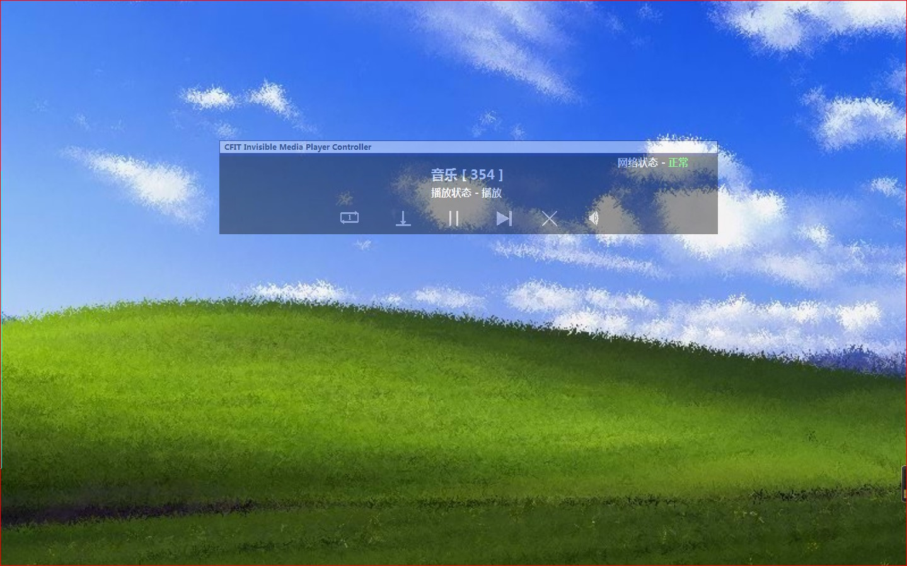

◎
开发者有话说
◎
2022年4月29日当晚，开发者（下简称 我）和弟弟合作，编写了一个网页，
也就是你现在所看到的样子。看到这个网页，你是不是有这样的疑惑：
◎为什么网页上有一个
黑色的控制台？
◎为什么控制台上要如此设计？
◎为什么音乐要标
序号？
◎为什么……
甚至，你是不是有些失望，感觉
网页不过如此？
但这个网页的内容，在11个月前，还只是一个
未成形的、微不足道的程序。
那是一个难以言说的时期。5月18日，一个普普通通的周二，一通来自老家的电话，牵走了妈妈的心绪，
留下了我和弟弟独自二人在家。
寂静如一只吝啬鬼，每当我和弟弟回到家，它让死一般的沉静吞噬整个屋子。
没有声音，又没有影子，再想到老家，我不禁愁涔涔而泪潸潸了。
打破这寂静的，除了文字，可能就只有音乐了。我们收藏的音乐又有限，不足以打破这寂静——别无他法，
我想起了程序这件法宝。20日晚，写完作业，我花一个小时，编写了一个小小的程序。当我把程序命名为
CFIT Invisible Media Player（区别于以前的
CFIT Media Player,一个音乐文件播放器）时，我根
本没有意识到，它对我未来的影响。
此时，这真的是一个特别小的程序——20首音乐，构成它的数据库；界面简单，布局粗糙，一些地方还需要
手动操作，根本比不上我之前编写的
病毒传染模拟 ，英汉小词典 之类的“鸿篇巨制”。可这件法宝，已经
足以吓退寂静。此后的7天内，回到家，打开这个程序，在一片音乐声中写作业，那滋味——简直绝了。
可仅仅20首音乐，听着听着就腻了，不足以维持长远。于是，下一个目标，就是扩增数据库。5月28日，我
编写了一个简易的Python程序，在网易云音乐的“古典”分区提取了3469首音乐名称和链接。这个数据库，
被命名为“
Lnk_Info1.txt”。岂能想到，这个不足400KB的文本文档能影响至今！可惜由于程序缺陷，录入
数据库时，我只成功录入了2121首。但这么多，也已经够了。事实上，至今还没有听完呢！
在这里，顺便谈一谈它的名字：
CFIT Invisible Media Player。
CFIT（ChenFei Information Technology)，
我和我弟联合开发的标志；
Invisible,不可见，指这个播放器并不可见。当初的理念，即
听音乐，就像了解一个不善交际的男孩子。设想你在一片茂密的丛林，在他独处的房屋旁边，忽然听到房屋里传出乐音，或小提琴细细
缠绵，或钢琴声清脆悦耳。但音乐本身，看不见，摸不着，却用声音传达了他的存在。
事到如此，好像一切都圆满了
|ू･ω･` )。
可这个程序稳定运行到6月末7月初时，
大量问题开始出现：播放断断续续，时常报错；有时候播放到某一个地方
就停下来，再也没有声响……我统计分析了原因，还是因为没有一套基础的控制台。那，怎么办？
我参考了各大音乐平台的播放器的格式，但总是不满意，最终我决定
自主设计图标。前几个图标直接设计，到了
“音量”，我使用系统中“Graphics”自带的“音量”图标加以改进，最后编写代码让它们各司其职。
记住，这是7月17日，
今天妈妈不在家。
我在当日的随笔中，写下如下一段文字：
“今天完成大部分任务后，我抽了90分钟，对CFIT Invisible Media Player进行了更新。此次更新内容为
，增加
CFIT Invisible Media Player Controller(CFIT Invisible Media Player控制台)，其有
播放，暂停，下载，隐藏，音量等功能。其启动音乐为
WindowsXP开机音乐。此后将有更多改进。”
于是，它的面貌焕然一新。

在5月28日写程序测试期间，我建立了一个小小的文件夹——CFIT_Download_Assistants,用于未来下载音
乐。如今——
轻轻点击程序上小小的下载键，300多首音乐（总计2.4G）“落户”于此。为了弥补好音乐来不及
下载这一缺憾，我建立了程序“日志”迄今为止，文件大小接近
4MB，计入数据
17万行。
这11个月内，它也做出了许多贡献。6月，我凭借它找到了6年多苦苦寻找的一首古典音乐——小步舞曲（包凯
列尼）。此后每一个月，它陪伴我入睡，装饰着我的梦；它的音乐ID，也成为我和我弟茶余饭后的谈资——
0001，经典中的经典；
2047、2052(Sustain、Violin Concerto in D Major,III.Rondo)，
诡异音乐“鼻祖”；“十九世纪中后期”（
1850-1900中的大部分），恶魔指尖下的音乐；
1101-1110
，“倍尔金特：在山魔王的宫殿中”专区；
1917-1921，“Amarilli”专区……对古典音乐的热爱，也
一定条件下帮助了我。“匈牙利代表团出场用的是‘匈牙利进行曲’！”2月4日，冬奥会开幕，各国国家
队出场，其背景音乐全是古典音乐，而我在它的助力下，不仅认识所有音乐，而且对其作者以及部分的
音乐的创作背景有所了解。它，就是一个不到300KB的程序，自编写之日起，本该被埋没在数百个大大
小小的程序里，却在一天天的耳濡目染里，在回首相望的记忆里，对我产生极大的影响。
29日，在这个程序诞生11月之际，我和弟弟合作，将它
1:1复刻成网页版。当设计完成，第一次调试，
按下启动键，熟悉的启动音乐响起，我忍不住热泪盈眶。
这是独属我们的一份
记忆。
一曲悲歌常入梦，
何怜新语再相逢。
记忆有情留不住，
年华无言去匆匆。
听听音乐，如何？
开发者: 来自合肥市第六中学的
谢鹏程(CIT) 谢鹏飞(FIT)
2022年4月30日谨记